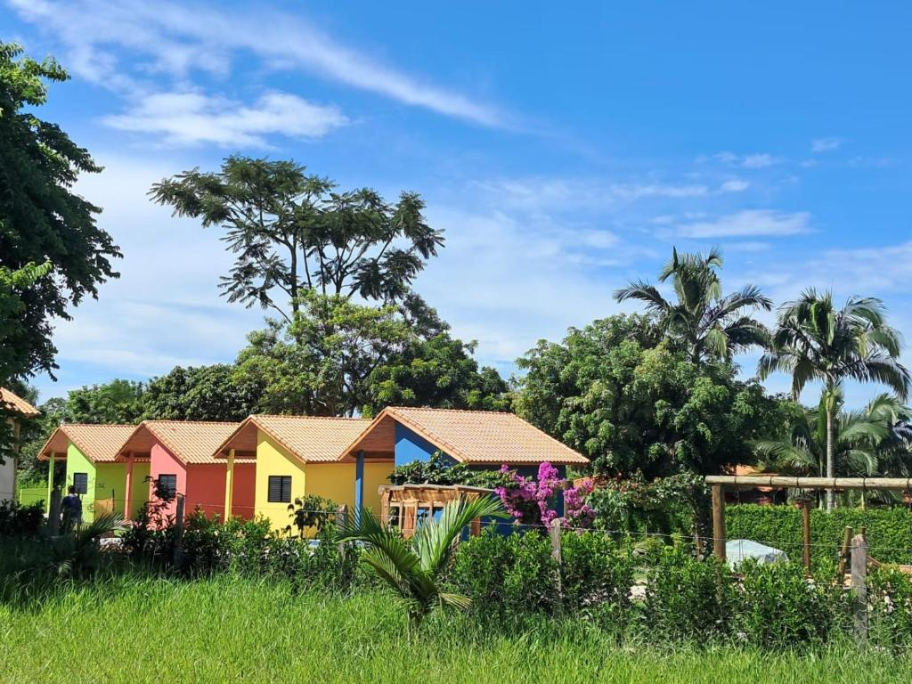

Seu tempo, do seu jeito, aqui na serra.
Hospedagem, lazer e natureza em Capela do Jacu, Lavrinhas. Chegue, desacelere e fique o quanto der vontade.

Lavrinhas, SP
Mais do que uma hospedagem: um lugar pra viver.
Em Capela do Jacu, Lavrinhas, o Quintal da Serra reúne natureza, tranquilidade, hospedagem e diferentes formas de aproveitar o tempo.
Escolha sua experiênciaEscolha seu espaço.
Do conforto dos chalés à experiência mais próxima da natureza, consulte as opções disponíveis.
Por aqui, o dia também acontece.
Além de descansar, o Quintal da Serra oferece um espaço para aproveitar a natureza, o lazer e o tempo junto de quem importa.
- PiscinaA confirmar
- Quadras e espaços de lazerA confirmar
- Jardim e naturezaA confirmar
- Áreas ao ar livreA confirmar
- Espaços de convivênciaA confirmar
O essencial pra ficar bem.
Uma seleção de comodidades conhecidas para tornar os dias mais gostosos.
Piscina
Um convite para relaxar e aproveitar o tempo.
Wi-Fi gratuito
Conecte-se quando quiser.
Estacionamento
Mais praticidade para chegar e ficar.
Ar-condicionado
Conforto em todas as estações.
Café da manhã
Comece o dia com calma e sabor.
Jardim e natureza
Paisagens para respirar fundo.
Varanda
Um espaço para contemplar sem pressa.
O luxo de
não ter pressa.
Um descanso a dois, uma tarde ao ar livre, tempo em família ou simplesmente a vontade de estar.
Planejar meu momentoUm pouco do Quintal.
Fotos reais e categorias oficiais serão adicionadas na versão final.
Capela do JacuLavrinhas · SP
A serra também é seu quintal.
Além do Quintal, Lavrinhas convida a descobrir a natureza, as paisagens e os atrativos da região. Explore no seu ritmo.
Atrativos, distâncias e como chegar: informações a confirmar.
Quem passa por aqui, recomenda.
★★★★★
[NOTA REAL] · avaliações reais serão inseridas
[DEPOIMENTO REAL]
[DEPOIMENTO REAL]
[DEPOIMENTO REAL]
Veja mais do Quintal.
Acompanhe as novidades e descubra um pouco do que acontece por aqui.
Seguir no InstagramSeu próximo momento começa aqui.
Escolha como você quer viver o Quintal da Serra e consulte as opções disponíveis.
Venha conhecer.
Capela do Jacu · Lavrinhas, São Paulo
[ENDEREÇO COMPLETO]
Mapa e link de acesso: a confirmar.
Capela do Jacu
Lavrinhas · SP
Lavrinhas · SP